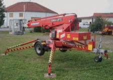
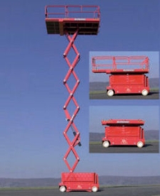
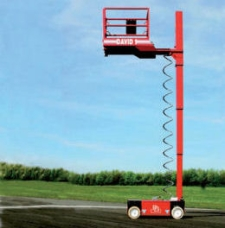
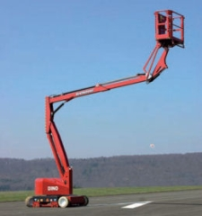
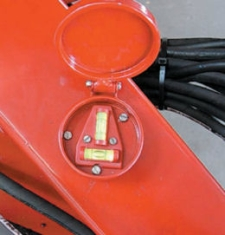
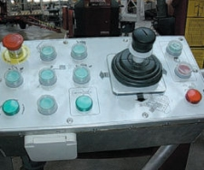

Die DIN EN 280 definiert eine fahrbare Hubarbeitsbühne als fahrbare Maschine, die dafür vorgesehen ist, Personen zu Arbeitsplätzen zu befördern, an denen sie von der Arbeitsbühne aus Arbeiten verrichten.
Hubarbeitsbühnen sind je nach der konstruktiven Ausbildung des Fahrgestells im Gelände, auf Straßen und/oder auf Schienen einsetzbar und dienen der Durchführung von Arbeiten an hochgelegenen Arbeitsplätzen (Bilder 3-1 bis 3-4).
Hubarbeitsbühnen bestehen in der Regel aus
Gemäß DIN EN 280 erfolgt die Einstufung der Bauart der Hubarbeitsbühnen nach der Art der Hubeinrichtung, unabhängig davon, welches Untergestell vorhanden ist.
Demnach wird unterschieden in:
Außerdem werden sie noch in drei Typen eingeteilt:
|
Anmerkung: Typ 2 und Typ 3 können untereinander kombiniert werden. |
 Bild 3-1: Teleskopmastbühne Typ 1b |
 Bild 3-3: Scherenbühne Typ 3a |
||||||||||
 Bild 3-2: Stempelmastbühne Typ 3a |
 Bild 3-4: Gelenkarmbühne Typ 3b |
||||||||||
Das Untergestell bildet die Basis einer Hubarbeitsbühne und kann gezogen oder geschoben werden oder selbstfahrend sein.
Als Abstützvorrichtungen dienen mechanische Spindeln, Hydraulikzylinder, Achsfederverriegelungseinrichtungen oder ausziehbare Radachsen.
Jede fahrbare Hubarbeitsbühne hat eine Einrichtung (z. B. Nivellierwaage, Dosenlibelle), die anzeigt, ob die Neigung des Untergestelles in dem vom Hersteller zugelassenen Grenzwert liegt (Bild 3-5). Sie ist für die standsichere Justierung der Hubarbeitsbühne von großer Bedeutung. Diese Nivellierhilfsmittel befinden sich in unmittelbarer Nähe der Bedienelemente für die Abstützungen. Viele Hubarbeitsbühnen besitzen Einrichtungen, die das Ausrichten des Untergestells in beiden Ebenen automatisch durchführen. Dies erfolgt durch Inclinometer und Neigungssensoren.

Steuereinrichtungen von Hubarbeitsbühnen (Bild 3-6) befinden sich im Arbeitskorb und eventuell zusätzlich am Untergestell. Sie sind so ausgerüstet, dass sie nicht unbeabsichtigt betätigt werden können. Nach dem Loslassen gehen sie selbsttätig in die Nullstellung zurück. Die Steuerung des Hubwerkes erfolgt bei elektrischer Steuerung über Tastschalter und bei hydraulischer Steuerung über Handhebel. Eine Sicherheitselektronik überwacht bei neueren Konstruktionen das komplette Antriebssystem, um Überlastungen und Überschreitungen der zulässigen seitlichen Ausladung zu vermeiden.

Hubarbeitsbühnen sind mit einem übergeordneten Notsteuersystem (z. B. Handpumpe, eine zweite Energieversorgung, Notablass) ausgerüstet. Das Notsteuersystem ist eine Einrichtung, mit deren Hilfe die Arbeitsbühne bei Ausfall der Antriebskraft noch in eine Stellung gebracht wird, in der eine Person die Bühne sicher verlassen kann. Sie befindet sich unten am Fahrzeug oder fahrbaren Untergestell. Ist die Arbeitsbühne in jeder Stellung über fest angebrachte Leitern zu erreichen und zu verlassen, kann ein Notsteuersystem entfallen.
Eine Sicherheitseinrichtung schließt ein unbefugtes Benutzen der Hubarbeitsbühne aus (z. B. abschließbarer Schalter).
An allen Seiten des Arbeitskorbes befinden sich Umwehrungen (3-teiliger Seitenschutz), um das Herabfallen von Personen und mitgeführten Gegenständen zu vermeiden.
Grundsätzlich sind die konstruktiven Merkmale der entsprechenden Hubarbeitsbühne in der Betriebsanleitung des Herstellers aufgeführt und sollten von jedem Bediener vor der Benutzung studiert werden, um einen sach- und fachgerechten Umgang zu gewährleisten.
Die Betriebsanleitung enthält auch Hinweise zu den Einsatzbedingungen und eventuellen Beschränkungen für die Verwendung.
Fahrbare Hubarbeitsbühnen sind teilweise mit besonderen Sicherheitseinrichtungen ausgerüstet, wie die
Diese Sicherheitseinrichtungen sind nicht alle in jeder fahrbaren Hubarbeitsbühne eingebaut. Die Ausbildung der Konstruktion und der Bauart bestimmen den Einbau.
Diese Einrichtungen sind verplombt und für den Bediener absolut tabu. Es darf nicht an ihnen repariert oder sogar manipuliert werden!
Die Momentmesseinrichtung überwacht und misst das Lastmoment aus Belastung und Stellung der Arbeitsbühne, welches die Arbeitsbühne zum Kippen bringen will. Ist das zulässige Kippmoment erreicht, können nur noch Bewegungen ausgeführt werden, die das Kippmoment verringern.
Die Lastmesseinrichtung (Überlastsicherung) misst die senkrechte Belastung des Arbeitskorbes. Diese Sicherheitseinrichtung unterbricht alle betriebsmäßigen Bewegungen aus dem Stillstand, wenn die zugelassene Nennlast überschritten ist. Erst nach Beseitigung der Überlast lassen sich betriebsmäßige Bewegungen wieder ausführen. Kritisch ist dies bei Übernahme von größeren Lasten in den Arbeitskorb in angehobener Stellung der Bühne.
|
Achtung! Hierzu ist unbedingt die Bedienanleitung zu lesen. Viele Lastmesseinrichtungen schalten bei Überlast im Arbeitskorb alle Bewegungen ab! Wenn kein Entfernen der Überlast möglich ist, bleibt nur ein Notablass! |
Die Stellungsüberwachung (Stützdrucküberwachung, Schrägstellungsüberwachung) bewirkt, dass der Arbeitskorb nicht in Bereiche gehoben, gedreht oder geschwenkt werden kann, in denen die Hubarbeitsbühne über keine ausreichende Standsicherheit verfügt oder eine Überbeanspruchung tragender Konstruktionsteile erfolgt. Elektronische Grenztaster, mechanische Endanschläge und nichtmechanische Begrenzungseinrichtungen stellen sicher, dass Bewegungen nur im zugelassenen Arbeitsbereich ausgeführt werden.
|
Achtung! Nicht alle fahrbaren Hubarbeitsbühnen verfügen über derartige Sicherheitseinrichtungen – Bedienanleitung bzw. Handbuch und Arbeitsdiagramm beachten. |